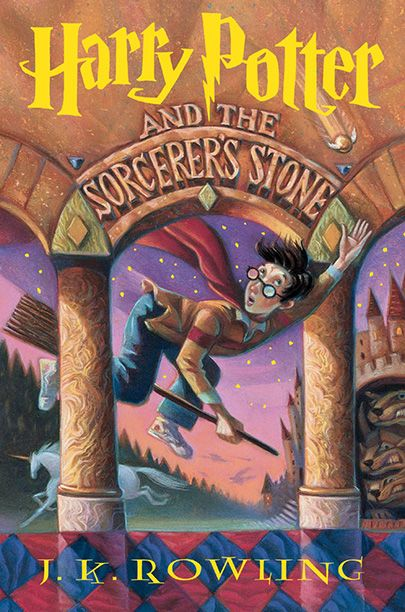

Continue reading
NLP progress tracking
Circe
210 of 400 pages · est. finish Sep 12 (~18 pg/day)

Project Hail Mary
64 of 476 pages · est. finish Oct 3 (~12 pg/day)
🎯 Adaptive daily goal
32 / 40 pages
80% on track
🔥 Streak & velocity
12 days
avg. 34 pages / session
📚 Books completed
2 finished
rated 4.5★ avg
Recommended for you
Myth & literary fantasy · 4 matches
Harry Potter
90% match
#magic
#adventure
Fits your pace for series-length reads
Ask Assistant about this
The Fault in Our Stars
86% match
#grief
#coming-of-age
Strong emotional arc, shorter length
Ask Assistant about this
Where She Went
82% match
#loss
#music
Similar emotional tone to your recent reads
Ask Assistant about this
Where'd You Go, Bernadette
78% match
#witty
#family
A lighter, faster-paced pick
Ask Assistant about this
✏️ Ask the Assistant
Get picks, or talk through what you're reading
Hi! Tell me what you're in the mood for, or paste a passage from Circe you want to reflect on.
I loved the isolation and mythology in Circe — what should I read next?
Got it — I pulled that from your highlighted passage too. Updated your recommendations on the left based on these themes:
#isolation
#identity
#mythology